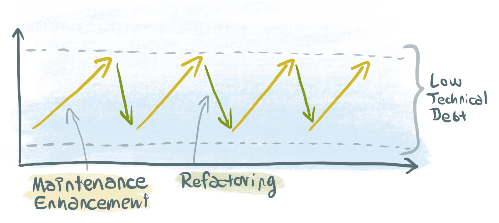
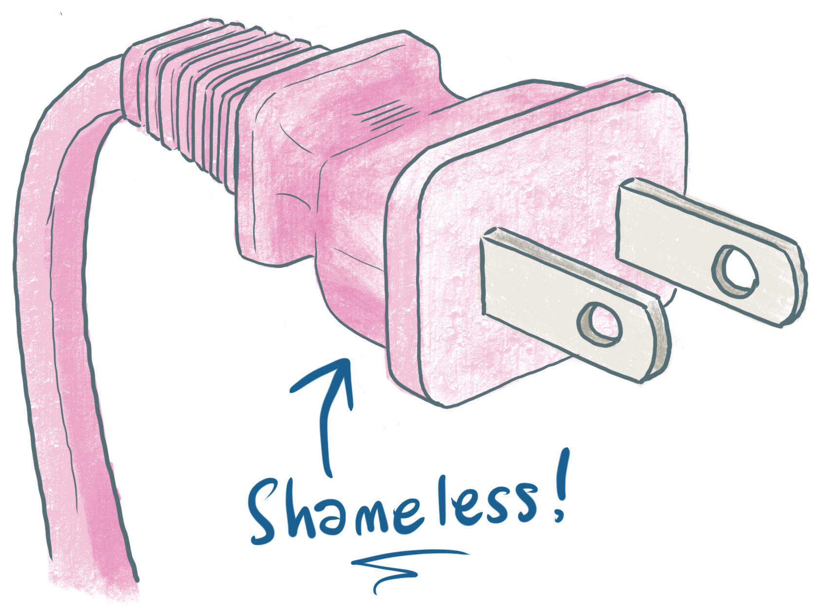

Patrick Hund | Lead Frontend Developer | @wiekatz
Hi everyone, my name is Patrick. I work at eBay in Berlin.
I'm very excited to be here today to talk about breaking down your React app!
Can anyone tell me what this is?
So, tadaa, our first release. It’s all good, software craftsmanship at its best. Servers running
smoothly, high code coverage, only a few bugs and loose ends.
So let’s add some more features. Our app is coming along great!
And some more features… but what’s this? Bug rate is increasing? It’s getting harder and harder to
understand what’s going on in the code. We should fix that! And fix it we will! Eventually! When
we’re done with the next release, or perhaps the one after that, because rolling out those new
features is super important!
OK, now the developers are fixing some of the problems, but it’s starting to look more and more
like we’re just fire fighting, patching up what actually should be torn down and rebuilt from
scratch.
Software Entropy
Accumulation of Technical Debt
Software Entropy.
(source: Dr.
Carola Lilienthal )
To prevent this, you have to refactor your code base periodically. It’s not just about fixing
bugs, it’s about keeping your code clean, about making it consistent.
Otherwise you'll get to a point where the cost of maintaining your code base and adding new
features is so high that there is no other way than doing a full rewrite.
So what does all that have to do with React?
If you use React right, you can create a set of loosely coupled components, with well defined
purpose.
So let's build our website: here's the footer…
…here are some posts from our discussion forum…
…a search form to search the posts…
…and a page header on top.
We can throw away the old heder and replace it with a shiny, new one.
In the pre-component age, with a tightly coupled, monolithic application, this was expensive
and time consuming, much less now.
Big Ball of Mud
React Component Spaghetti
Just because you are using React doesn't mean you have a clean, well structured codebase
automatically. You can create a “big ball of mud" with React just as well as you can with jQuery
or anything else.
Divide and Conquer
So what are some best practices to leverage the power of components in your React application?
How do you actually break down your React app?
Separate presentational
In React, you can happily mix up your UI logic, your business logic and your JSX template
code. That doesn't mean you should, though – it's the shortest path to the before mentioned
steaming bowl of spaghetti code.
Organize presentational components
Once you've separated presentational components, you can use them to create a living style
guid, using tools like Storybook or React Styleguidist.
Separation of Concerns
(source: Cristiano
Rastelli )
So let's talk about “separation of concerns”, a term you probably remember from your computer
science classes, but what does it actually mean from a frontend developer's perspective?
Separation of Concerns
(source: Cristiano
Rastelli )
The concerns that should be separated are the features of the app, the lego bricks that I'm
building my app of, each containing their own HTML, CSS and JavaScriptclick right graph )
This is how we organized the JavaScript modules of our app at first
(click left box ). As you can see, we are using Redux, so we created directories
for our presentational components, our containers, our actions, our reducers and selectors,
all nicely sorted by module type, and at the root, one source and one test directory for
unit tests, which has the same structure as the source directoryclick right box )
Bricks
Bricks – the building blocks of our web applications, like putting Lego bricks together.
It's about time to get more practical and show some actual code. I'll use an example brick
I've made throughout the rest of my talk. It shows the latest headlines from Hacker News.
My Hacker News brick is a little application within my main application that uses Redux to
display some data to the user.
It looks like this. It preloads its data from the global Redux state, and when you
hit the “Update” button, it updates its content from the Hacker News API.
For those who are not familiar with how Redux works, let's do a quick recap:
(start video )
index.js
export { default as HackerNews } from './components';
export * from './actions';
export { default as reducer } from './reducer';
export { default as saga } from './sagas';
export { default as selectors } from './selectors';
There is a contract we have about our bricks: each brick shall have one index.js
file in its root directory which provides exports of the five parts of the brick
that need to be integrated in the parent application.
index.js
export { default as HackerNews } from './components';
export * from './actions';
export { default as reducer } from './reducer';
export { default as saga } from './sagas';
export { default as selectors } from './selectors';
Each brick exports one main React component, which is usually a container
connected to the Redux store. In case of our Hacker News Brick, this is the
component that renders the box with the latest news.
index.js
export { default as HackerNews } from './components';
export * from './actions';
export { default as reducer } from './reducer';
export { default as saga } from './sagas';
export { default as selectors } from './selectors';
Then each brick exports one or more action creator functions, which allow the
parent app – or even other bricks – to send signals to our brick to make them
do things. In case of our HackerNews brick, there is an action that triggers
updating the Hacker News stories.
index.js
export { default as HackerNews } from './components';
export * from './actions';
export { default as reducer } from './reducer';
export { default as saga } from './sagas';
export { default as selectors } from './selectors';
Each brick has a reducer that updates the Redux state in response to actions
being dispatched. This reducer is combined with the reducer of the parent
application.
index.js
export { default as HackerNews } from './components';
export * from './actions';
export { default as reducer } from './reducer';
export { default as saga } from './sagas';
export { default as selectors } from './selectors';
Each brick has one Redux saga that is run by the parent application. Sagas
are for handling side effects such as data loading through a Redux middleware.
index.js
export { default as HackerNews } from './components';
export * from './actions';
export { default as reducer } from './reducer';
export { default as saga } from './sagas';
export { default as selectors } from './selectors';
Finally, each brick exports an object with selector functions that
are used to pick data from the Redux state. Why not just access the
Redux state directly?
Well, there is always only one global Redux state as single source of
truth. This is one of the big advantages of Redux: you can look at the
state at any point to see exactly what's going on. Your Hacker News
brick has its own place in that state. If we access the state from
the HackerNews component directly, we'll have to make sure that
the path to the data in the state is always exactly the same –
in this case modules > hackerNews. By using selectors, we can put the
state of our brick anywhere, and we only have to change a single line of
code to do it:
registerSelectors.js
import { registerSelectorsForUseWithGlobalState } from "@modular-toolkit/selectors";
import { selectors as hackerNews } from "@modular-toolkit/demo-module";
const selectorMapping = {
"modules.hackerNews": hackerNews
};
export default () => {
for (const [path, selectors] of Object.entries(selectorMapping)) {
registerSelectorsForUseWithGlobalState(path, selectors);
}
};
In this code snipped taken from the demo I've showed you,
we define the path for our bricks with a path string.
registerSelectors.js
import { registerSelectorsForUseWithGlobalState } from "@modular-toolkit/selectors";
import { selectors as hackerNews } from "@modular-toolkit/demo-module";
const selectorMapping = {
"bricks.widgets.hackerNews": hackerNews
};
export default () => {
for (const [path, selectors] of Object.entries(selectorMapping)) {
registerSelectorsForUseWithGlobalState(path, selectors);
}
};
In this code snipped taken from the demo I've showed you,
we define the path for our bricks with a path string.
registerSelectors.js
import { registerSelectorsForUseWithGlobalState } from "@modular-toolkit/selectors";
import { selectors as hackerNews } from "@modular-toolkit/demo-module";
const selectorMapping = {
"bricks.widgets.hackerNews": hackerNews
};
export default () => {
for (const [path, selectors] of Object.entries(selectorMapping)) {
registerSelectorsForUseWithGlobalState (path, selectors);
}
};
We used a little trick to be able to do this:
in the registerSelectorsForUseWithGlobalState function, which is
just eight lines of code, we store the path as a property
of the selector function. In the brick's container component,
instead of using Redux's connect function directly, we use
out own version which reads this path and “rebases” the
selectors to point to the correct part of the state.
rootReducer.js
import { combineReducers } from "redux";
import { reducer as hackerNews } from "@modular-toolkit/demo-module";
export default combineReducers({
bricks: combineReducers({
hackerNews
})
});
So we've seen how to connect the Brick's selectors. To be able to
use the brick in our app, we have to do two more things:
first, add the brick's reducer to the app's reducers. We are using
the combineReducers function from the Redux library here to be
able to deep nest our reducer, and combine it with reducers from
other bricks, or from the parent application.
configureStore.js
import { applyMiddleware, createStore } from "redux";
import createSagaMiddleware from "redux-saga";
import rootReducer from "./rootReducer";
import { saga } from '@modular-toolkit/demo-module';
export default () => {
const sagaMiddleware = createSagaMiddleware();
const store = createStore(rootReducer, applyMiddleware(sagaMiddleware));
sagaMiddleware.run(saga );
return store;
};
The last piece of the puzzle that's missing to wire up our brick
is running its saga, which we do using the Redux saga middleware.
So that's it! Now I can just drop my HackerNews components anywhere in my
page, just as if it were a simple presentational component. It will load
its data automatically when it is mounted, or I could dispatch an update
action to make it update.
So there you have it. Now we can build a large, complex platform and split it
up into little pieces, different developers, even different teams can work
independently on the bricks. They are distributed as versionized npm modules.
It's all good, right?
Complicated “wiring up” of selectors, sagas and reducers
No code splitting
Not quite, there were two major drawbacks to our “Bricks architecture”

So when it was time again to take a break from building new features and
take care of accumulated technical debt, we got together and figured out a
better way to integrate our bricks.
configureStore.js
import { applyMiddleware, createStore } from 'redux';
import createSagaMiddleware from 'redux-saga';
import rootReducer from './rootReducer';
import hackerNews from '@modular-toolkit/demo-module';
import { BrickManager } from '@modular-toolkit/bricks/BrickManager';
export default () => {
const sagaMiddleware = createSagaMiddleware();
const store = createStore(rootReducer, sagaMiddleware);
const brickManager = new BrickManager ({ store, reducer, sagaMiddleware });
brickManager.installBricks({
'bricks.hackerNews': hackerNews
});
return store;
};
What we came up with is a new tool that we call the brick manager.
It gets initialized with the parent application's Redux store, its root reducer
(without any brick reducers) and the Redux saga middleware.
configureStore.js
import { applyMiddleware, createStore } from 'redux';
import createSagaMiddleware from 'redux-saga';
import rootReducer from './rootReducer';
import hackerNews from '@modular-toolkit/demo-module';
import { BrickManager } from '@modular-toolkit/bricks/BrickManager';
export default () => {
const sagaMiddleware = createSagaMiddleware();
const store = createStore(rootReducer, sagaMiddleware);
const brickManager = new BrickManager({ store, reducer, sagaMiddleware });
brickManager.installBricks({
'bricks.hackerNews': hackerNews
});
return store;
};
Instead of exporting reducer, saga and selectors separately from the brick,
we now have a default export that gives us an object with these. We can
pass this to the brick manager's install brick method to, well, install the
brick. And the nice thing is, this doesn't necessarily have to happen in
the configure store module, it can be anywhere in our app, at any time.
Remember the Recomposed container component I've showed you earlier?
This is where Recompose really shines:add withBricks in container and Gists component in page component )
So, let's take this one step further and use the new React 16.6 features lazy and Suspense
to lazy load not only the GistsPage component, but also out brick!
Now I can create a hook, let's call it useBrick and simply pop that into my page component
before I render my Gists brick. It doesn't get any easier than this!
So this is how we build our beautiful Lego brick castles at eBay.
I hope it was an inspiration to you to always go that one step further,
to break down your React app and battle code entropy and technical debt!

github.com/technology-ebay-de/modular-toolkit
npm install --save @modular-toolkit /bricks
One last thing: if you're interested in using the bricks system we've created
in your own application, we have an open source library for you. It's
called modular-toolkit and contains the brick manager I've shown you,
along with some other useful tools and a demo that shows how to put it all together.
Thank you!
Ninja Maaß
Frontend Developer
Daniel Schäfer
Frontend Developer
Eike Schulte-Kersmecke
Backend Developer
Anja Kunkel
Backend Developer
Torsten Walter
Frontend Developer
Juho Vepsäläinen
Dev Consultant
Mike Krüger
Quality Assurance
Hajo Skwirblies
Site Operations
Florian Stefan
Architect
Christoph Springer
Team Lead
Julia Thiele
Product Owner
Jakob Gehring
Product Owner
View this presentation online: http://bit.ly/breakdownreact
Patrick Hund | Lead Frontend Developer | @wiekatz
That's it from me, thank you for listening, and a special thank you to my team at eBay!